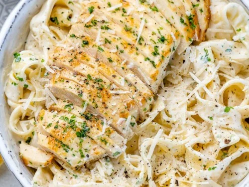

Heavy cream is gently simmered, reducing and thickening it
and then it gets help from grated Parmesan.
Ingredients
Kosher salt and freshly ground black pepper
12 ounces fettuccine
Olive oil, for tossing
12 ounces boneless, skinless chicken breast (about 2)
1 stick (8 tablespoons) unsalted butter
2 cups heavy cream
2 pinches freshly grated nutmeg
1 1/2 cups freshly grated Parmigiano-Reggiano
Directions
Step 1
Bring a large pot of water to a boil, and salt generously. Add the
pasta and cook according to package directions until al dente (tender
but still slightly firm). Drain and toss with a splash of oil.
Step 2
Meanwhile, slice the chicken into 1/4-inch-thick strips, and lay them
on a plate or a sheet of waxed paper. Season with salt and pepper.
Step 3
Heat a large skillet over medium heat. Add 2 tablespoons of the
butter. When the butter melts, raise the heat to medium-high and add
the chicken in 1 layer. Cook, without moving the pieces, until the
underside has browned, 1 to 2 minutes. Flip the pieces, and cook until
browned and cooked through, 2 to 3 minutes more. Transfer the chicken
to a medium bowl.
Step 4
Reduce the heat to medium. Add the remaining 6 tablespoons butter.
Scrape the bottom of the skillet with a wooden spoon to release any
browned bits. When the butter has mostly melted, whisk in the cream
and nutmeg and bring to a simmer, then cook for 2 minutes. Lower the
heat to keep the sauce just warm.
Step 5
Whisk the Parmigiano-Reggiano into the sauce. Add the chicken and
cooked pasta and toss well. Season with salt and pepper. Serve hot in
heated bowls.